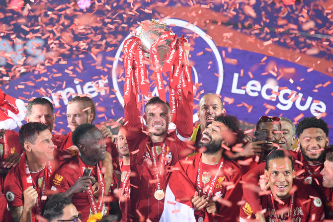
You will never walk alone
17/18 시즌 챔피언스리그 준우승
18/19 시즌 챔피언스리그 우승
19/20 시즌 프리미어리그 우승
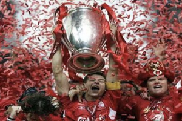
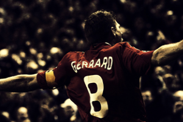
 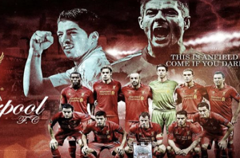
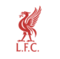
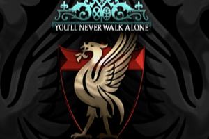
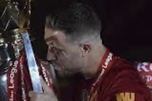
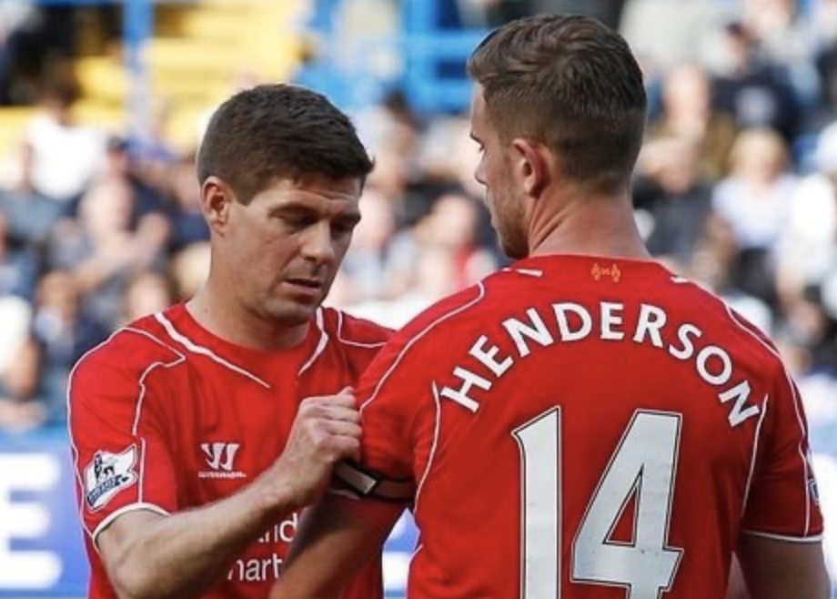
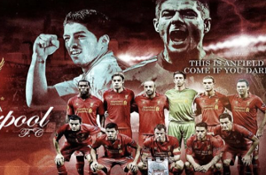
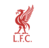
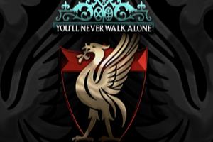
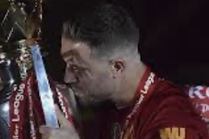
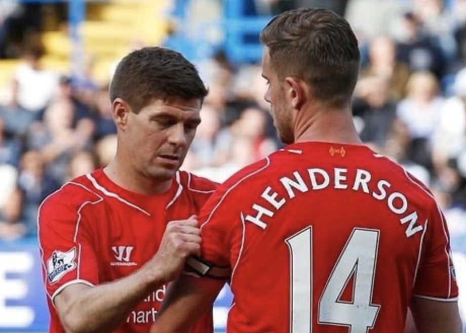
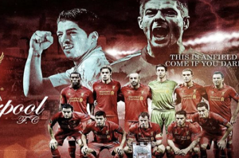
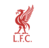
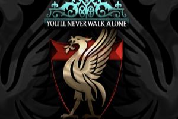
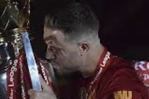
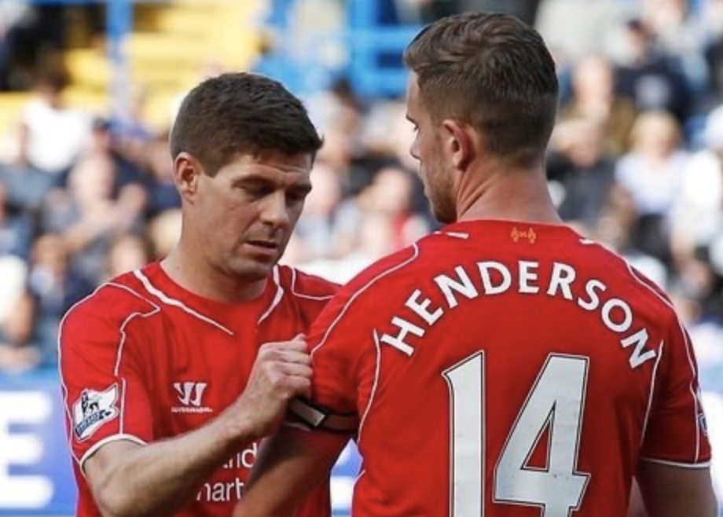
Do not forget the people of Hillsborough Disaster, Heysel Stadium Disaster
R.I.P
역사
리버풀 축구 클럽의 역사는 1891년으로 거슬러 올라간다. 안필드 경기장의 임대인이었던, 존 호울딩 (John Houlding)은 1891년 안필드구장의 전지분을 매입하고서는 임대료를 연간 100파운드에서 250파운드로 인상시키려는 움직임을 보였다. 다음 해인 1892년, 안필드 경기장에는 존 호울딩에 의해 1892년 3월 15일, 새로운 축구 클럽이 리버풀 시에 탄생하게 되며 8년간 안필드 경기장을 임대해 쓰던 에버턴은 바로 구디슨 파크로 구장을 옮겼다. 그 때 새롭게 생겨난 축구팀이 리버풀 축구 클럽이다.